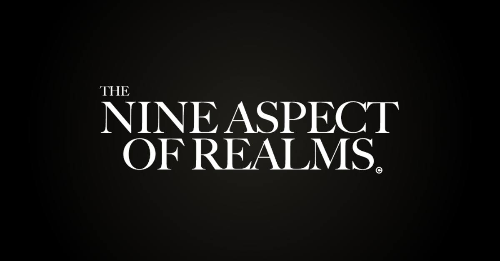

NAOR: The Nine Aspect of Realms
A single-player 2D pixel-art action platformer with a dark storyline, built in Unity by the OTK student game development team from 2021 to 2024.
Karanlık bir hikâyeye sahip, tek oyunculu 2D piksel art aksiyon platform oyunu; OTK öğrenci oyun geliştirme takımı tarafından 2021–2024 yılları arasında Unity ile geliştirildi.
The gameOyun
- Fluid movement: dash, glide, swing, crouch, and wall grab, slide, climb and jump.
- Akıcı hareket: atılma, süzülme, sallanma, çömelme; duvara tutunma, duvardan kayma, tırmanma ve zıplama.
- Melee combat: a 3-hit combo, charge and plunge attacks, plus throwable daggers and bombs.
- Yakın dövüş: 3 vuruşluk kombo, şarjlı ve dalış saldırıları, ayrıca fırlatılabilen hançerler ve bombalar.
- Soul and mana system: collect souls from enemies and spend mana on abilities like Soul Walk.
- Ruh ve mana sistemi: düşmanlardan ruh toplayın, manayı Soul Walk gibi yeteneklere harcayın.
- Enemies: sword, shield and archer enemies, and a necromancer that raises creatures.
- Düşmanlar: kılıçlı, kalkanlı ve okçu düşmanlar ile yaratıkları dirilten bir necromancer.
- World: NPC dialogue and fetch quests, inventory, portals, moving platforms, traps and a day-night cycle.
- Dünya: NPC diyalogları ve getir-götür görevleri, envanter, portallar, hareketli platformlar, tuzaklar ve gece-gündüz döngüsü.
How the team workedTakım nasıl çalıştı
- Three departments: Game Design for mechanics and narrative, Arthouse for concepts and assets, and Code Effect for building the game in Unity.
- Üç departman: mekanikler ve hikâye için Game Design, konseptler ve görseller için Arthouse, oyunu Unity'de geliştirmek için Code Effect.
- Process: tasks tracked in Jira, feature branches merged into
develop, and GameCI building Windows and WebGL versions automatically. - Süreç: görevler Jira'da takip edildi, feature branch'ler
developdalına birleştirildi ve GameCI, Windows ve WebGL sürümlerini otomatik olarak derledi. - My role: Lead Game Designer at OTK from 2021, then Project Leader for the club's 20 volunteer developers across 4 game teams.
- Rolüm: 2021'den itibaren OTK'da Lead Game Designer, ardından kulübün 4 oyun takımındaki 20 gönüllü geliştiricisi için Project Leader.
The browser build is an in-development test scene with debug controls, not a finished level.
Tarayıcı sürümü, hata ayıklama kontrolleri olan ve hâlâ geliştirilen bir test sahnesidir; bitmiş bir bölüm değildir.